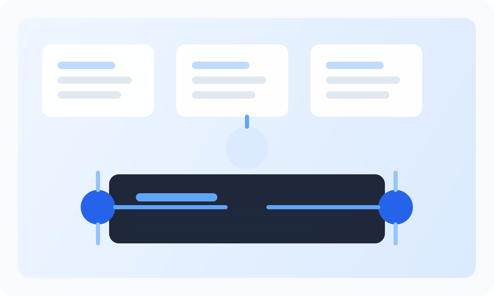
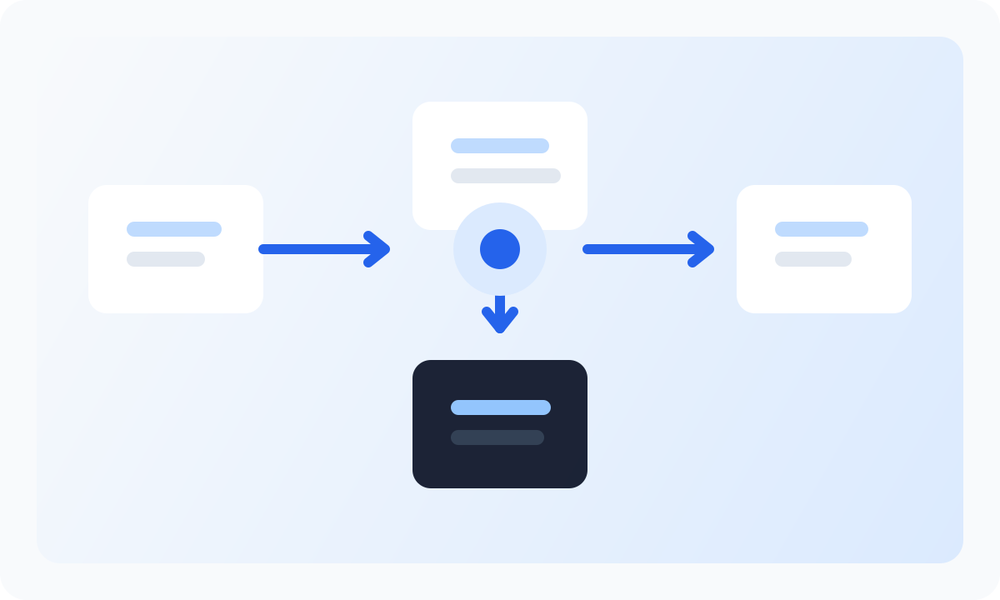

Identity ArchitectureDesigning Multi-Tenant Identity for SaaS
Learn how to structure tenants, clients, roles, and permissions when building a scalable identity platform for B2B SaaS.
Insights on OAuth2, identity architecture, security hardening, and SaaS engineering patterns teams can apply in production.

Identity ArchitectureLearn how to structure tenants, clients, roles, and permissions when building a scalable identity platform for B2B SaaS.

OAuth2A practical walkthrough of the most common OAuth flow for web apps, including PKCE, redirects, tokens, and backend validation.
Compare role-based and attribute-based access models to decide where each approach fits inside internal admin tools and customer-facing apps.
Explore how to introduce step-up authentication, tenant policy control, and recovery flows without degrading the sign-in experience.
Review the operational details that matter when validating access tokens, rotating secrets, and reducing leakage across service boundaries.